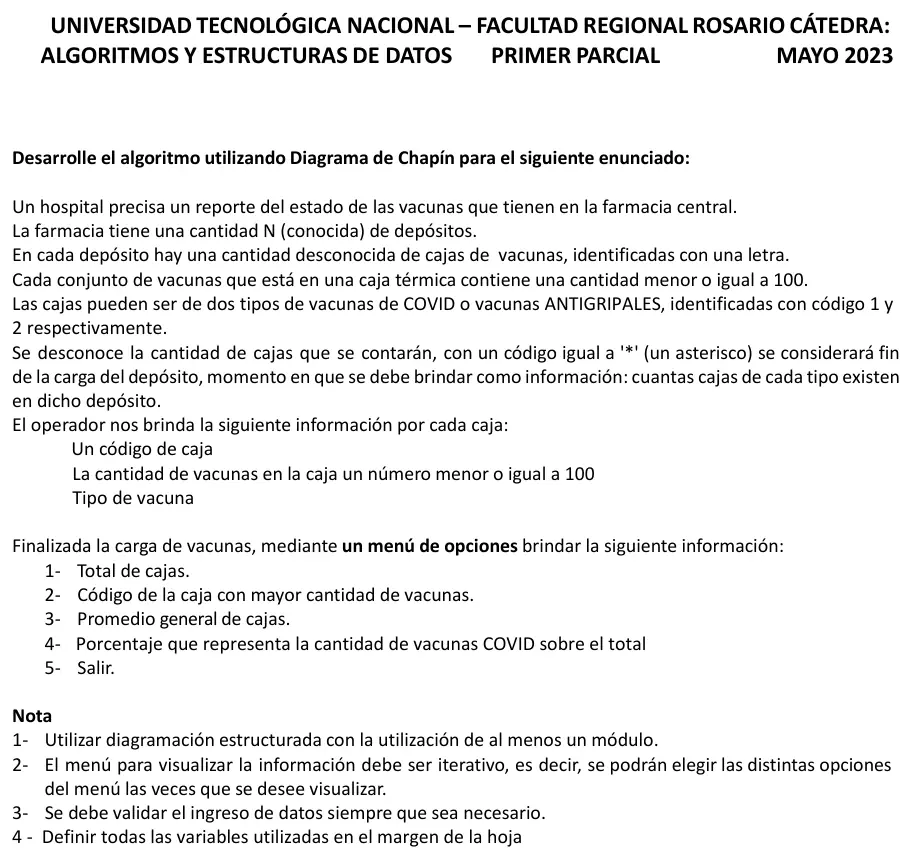

1° parcial, 17/05/2023 (Vacunas)
1° parcial, 17/05/2023
Enunciado


Propuesta de respuesta
Respuesta no verificada. La propuso Luta Studios con inteligencia artificial y ningún docente la revisó. Puede tener errores.
La hoja pide el diagrama de Chapin. Va un diagrama por módulo, con su declaración de variables arriba, y primero el del programa principal. Si un diagrama no entra en la pantalla, tocalo para verlo completo. Después de los diagramas está el mismo algoritmo en Python, para que lo puedas probar.
Programa principal
Variables globales y datos iniciales
Carga de cada depósito
Menú de opciones
El mismo algoritmo en Python
Es el programa que se probó, con las mismas sentencias y en el mismo orden que las cajas. Cada Leer del diagrama es un input, convertido a int o float según la declaración, y cada Mostrar es un print.
# Globales
# n, totCajas, totVacunas, vacCovid, mayorCant, mayorDep: int
# mayorCod: str
def INICIO():
global n, totCajas, totVacunas, vacCovid, mayorCant, mayorCod, mayorDep
n = int(input("Cantidad de depósitos: "))
while n <= 0:
n = int(input("Tiene que ser mayor que 0: "))
totCajas = 0
totVacunas = 0
vacCovid = 0
mayorCant = -1
mayorCod = ""
mayorDep = 0
def LEER_CODIGO():
# cod: str
cod = input("Código de caja, una letra (* para terminar): ")
while cod != "*" and (len(cod) != 1 or not ("A" <= cod <= "Z" or "a" <= cod <= "z")):
cod = input("Tiene que ser una letra o *: ")
return cod
def CARGA_DEPOSITO(dep):
# dep, cant, tipo, cajasCovid, cajasGripe: int
# cod: str
global totCajas, totVacunas, vacCovid, mayorCant, mayorCod, mayorDep
cajasCovid = 0
cajasGripe = 0
cod = LEER_CODIGO()
while cod != "*":
cant = int(input("Cantidad de vacunas (1 a 100): "))
while cant < 1 or cant > 100:
cant = int(input("Entre 1 y 100: "))
tipo = int(input("Tipo (1 COVID, 2 antigripal): "))
while tipo != 1 and tipo != 2:
tipo = int(input("Tiene que ser 1 o 2: "))
if tipo == 1:
cajasCovid = cajasCovid + 1
vacCovid = vacCovid + cant
else:
cajasGripe = cajasGripe + 1
totCajas = totCajas + 1
totVacunas = totVacunas + cant
if cant > mayorCant:
mayorCant = cant
mayorCod = cod
mayorDep = dep
cod = LEER_CODIGO()
print("Depósito", dep, "- cajas COVID:", cajasCovid, "- cajas antigripales:", cajasGripe)
def MENU():
# opcion: int
opcion = 0
while opcion != 5:
print("1- Total de cajas")
print("2- Código de la caja con mayor cantidad de vacunas")
print("3- Promedio general de cajas")
print("4- Porcentaje de vacunas COVID sobre el total")
print("5- Salir")
opcion = int(input("Opción: "))
while opcion < 1 or opcion > 5:
opcion = int(input("Opción inválida, de 1 a 5: "))
match opcion:
case 1:
print("Total de cajas:", totCajas)
case 2:
if totCajas == 0:
print("No se cargaron cajas")
else:
print("Caja", mayorCod, "del depósito", mayorDep, "con", mayorCant, "vacunas")
case 3:
if totCajas == 0:
print("No se cargaron cajas")
else:
print("Promedio de vacunas por caja:", totVacunas / totCajas)
case 4:
if totVacunas == 0:
print("No se cargaron vacunas")
else:
print("Vacunas COVID:", vacCovid / totVacunas * 100, "%")
# Programa principal
# i: int
INICIO()
for i in range(1, n + 1):
print("Depósito", i)
CARGA_DEPOSITO(i)
MENU()Respuesta no verificada. Puede tener errores.
Se armó con la hoja del examen y la página del 1° parcial (fin de datos, contadores, acumuladores, máximo, porcentaje, validar y menú iterativo). El menú con match y la declaración en comentarios siguen las preguntas frecuentes de los TP 2024. El Chapin sigue la forma de las diapositivas del examen de Historia Clínica de 2019.
Quedó en duda: El «promedio general de cajas» se leyó como vacunas por caja, el total de vacunas dividido el total de cajas. Otra lectura posible es cajas por depósito. La caja con más vacunas se busca entre todos los depósitos. Se muestra también su depósito, porque las letras se pueden repetir entre depósitos. N se lee al principio, porque la hoja dice que es conocida pero no da el valor. La letra del código se valida con los rangos de A a Z y de a a z. No usa métodos de strings, como piden los TP. Las diapositivas de la materia no muestran en Chapin la lectura de datos ni la selección múltiple. Acá van como Leer y como Según, con una columna por caso.
¿Cómo te fue?
Marcá cada tema del examen.
- ChapinCómo viene el examen, en 1° parcial
- ContadoresContadores, acumuladores y máximos, en 1° parcial
- MenúMenú iterativo, en 1° parcial